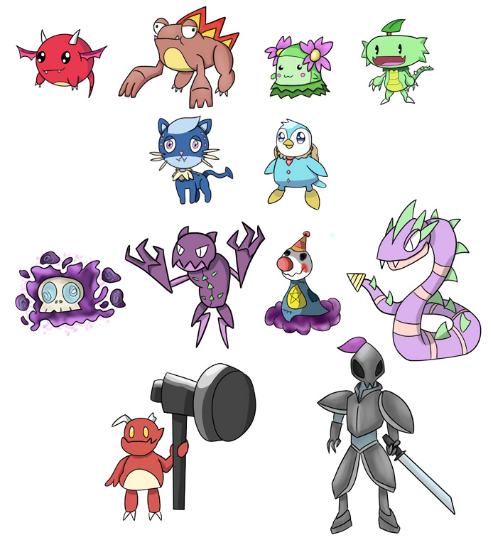

Programmer | 2D/3D Artist | Narrative Designer/Writer
Gacha-mon
Developed in Godot for an Alternative Controllers class, this project is inspired by gacha games and capsule
toy vending machines. The game is split into two parts, the gacha roll and the battle section. Players can roll for more gacha-mons
and use said gacha-mons in a turn-based battle system. The reward for winning a battle against an enemy NPC is coins which can be
used for more rolls, making for a simple yet effective gameplay loop.
Goal
Since this was for an Alt Controllers class, my roles were designing the gacha-mon creatures and the enemy NPC designs, and
creating a physical alternative controller utilizing a Microbit Controller and Breadboard circuit that acts as a physical interface
that interacts with the game. In addition to the controller, I would code the output from the controller that sends information to
the PC. I would also work and code for the gacha system, the experience meant to emulate the gachapon machines. My partner
would work on the UI/UX design and the battle system.
Development
This was a project I worked on with a partner. My partner was in charge of developing the mechanics and battle system. I was
primarily in charge of monster designs, the gacha system, and the build of the alt-controller. For the alternative controller,
we used a Microbit kit and a breadboard. The circuit build contains two buttons and a potentiometer. The buttons act as a confirm
and cancel button for basic gameplay. The potentiometer acts as a dial to maneuver the menus and also work in parallel with the
gacha system. Since we wanted to replicate a gashapon capsule toy machine, we had the potentiometer work as a crank as well.
For the casing of the alternative controller, we bought a gashapon cardboard model from Amazon. We then modified it to fit the Microbit and
breadboard, and then attach the dial to the potentiometer and made buttons that connect to the breadboard. There is an additional crank
that is comes along with the kit. This was used outside the game to dispense a card that represents a prize for the players to win after
playing our game.
The gacha system is basic but involved. To replicate the feel of a gashapon machine, we had a button act as
an ‘insert coin’ action and the potentiometer act as a crank. The player would insert a coin, turn the crank all the
way to the left and then turn it to the far right. The gacha animation plays and displays a monster. The system is
basically a random number generator that gives a random monster each time, meaning there is a likelihood of getting duplicates.
Monster Designs
For the monster designs, we decided on a total of 6 playable monsters. The design inspirations were a mix of Pokemon and Neopets.
And I themed the monsters around 3 elements, with 2 monsters representing an element. The main elements were fire, water,
and grass, calling back to the original Pokemon starters. I tried to design the monsters to range from being cute to goofy
and derpy. For the enemies, I initially themed the first 4 around the color purple, having varied designs. The last
two enemy monsters I based around weapons, a hammer and a sword. The last one in particular was inspired by Ceruledge
and Armarouge from Pokemon.
The art program I used to draw the designs was Medibang.
